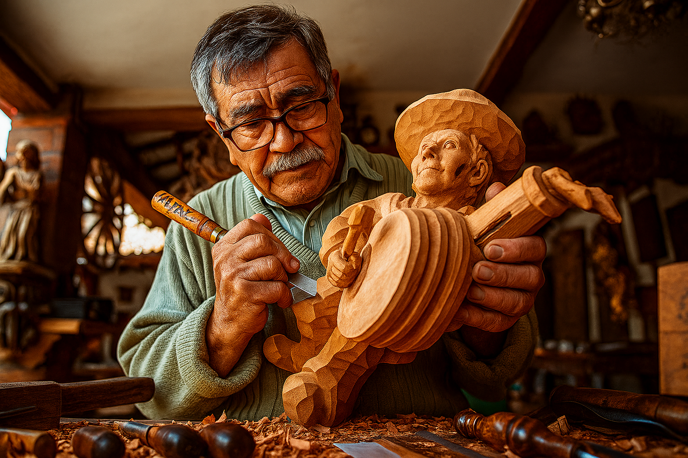
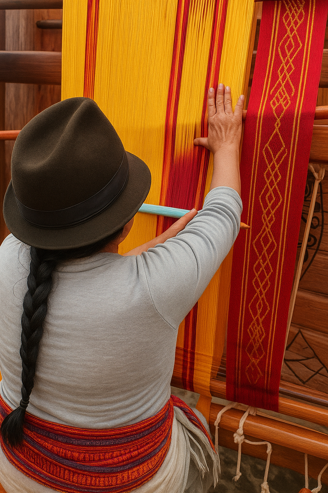
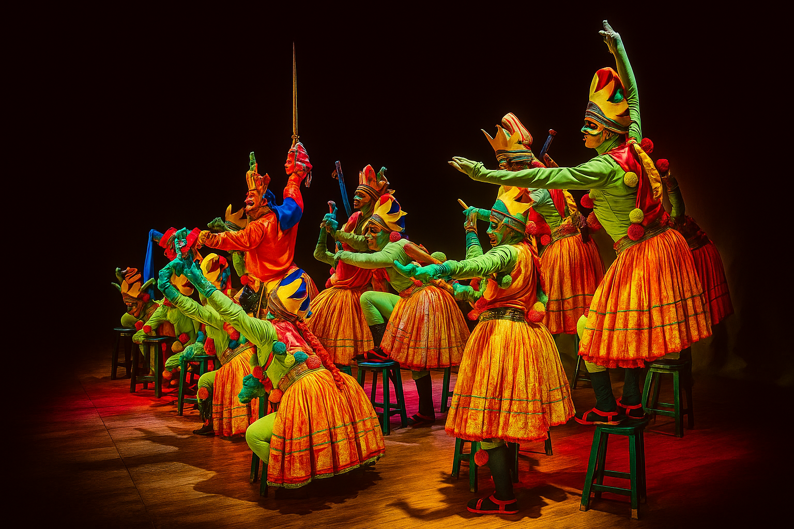
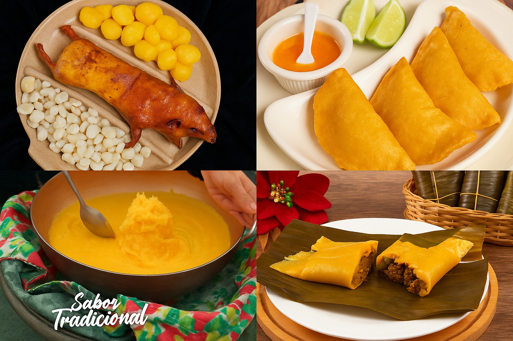
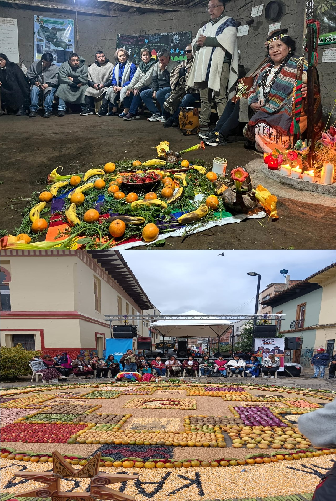
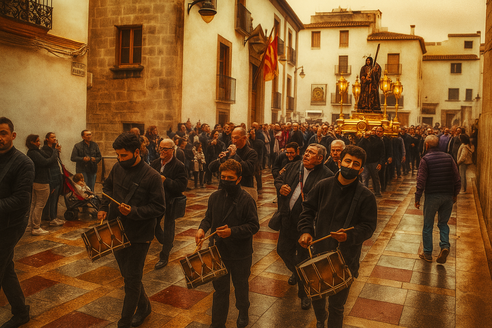
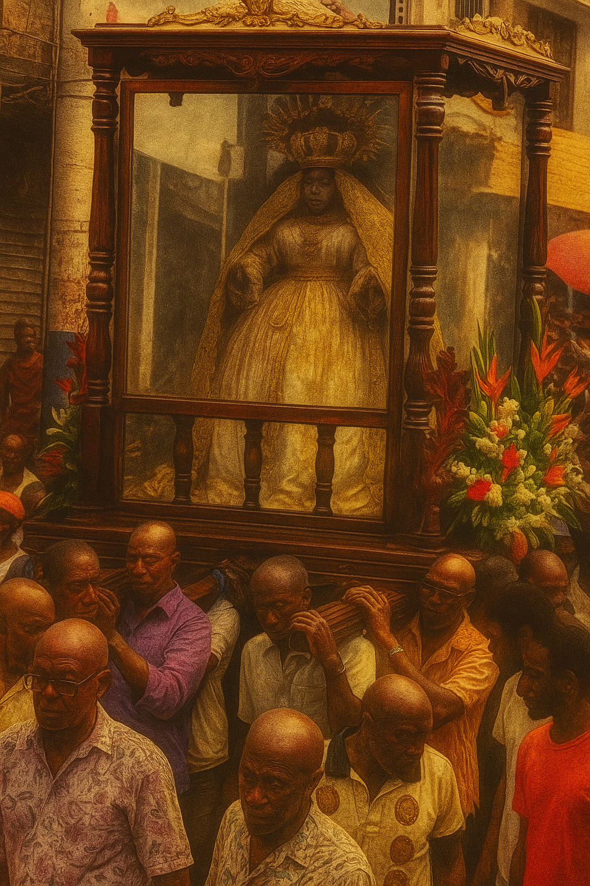
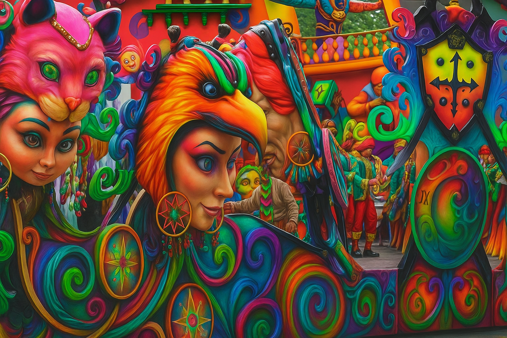
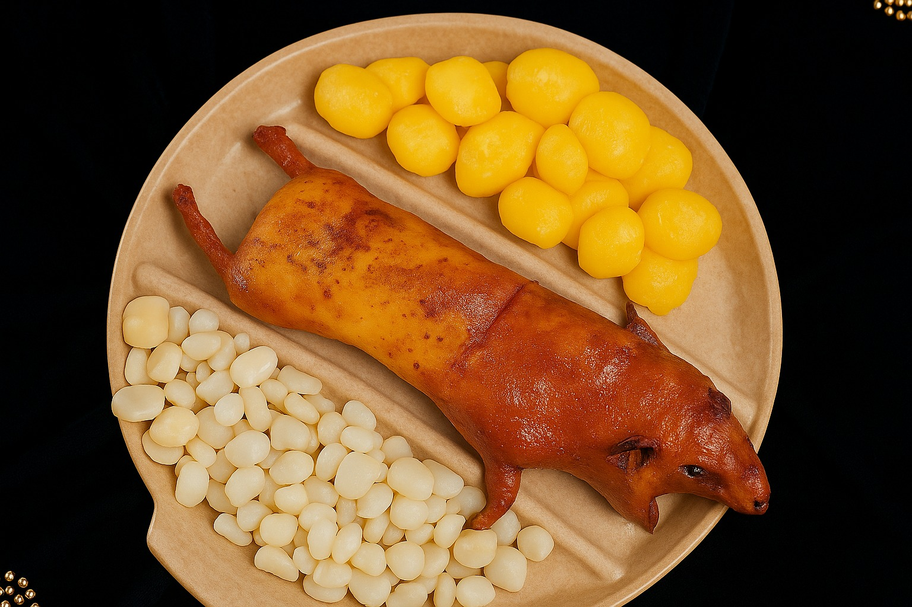
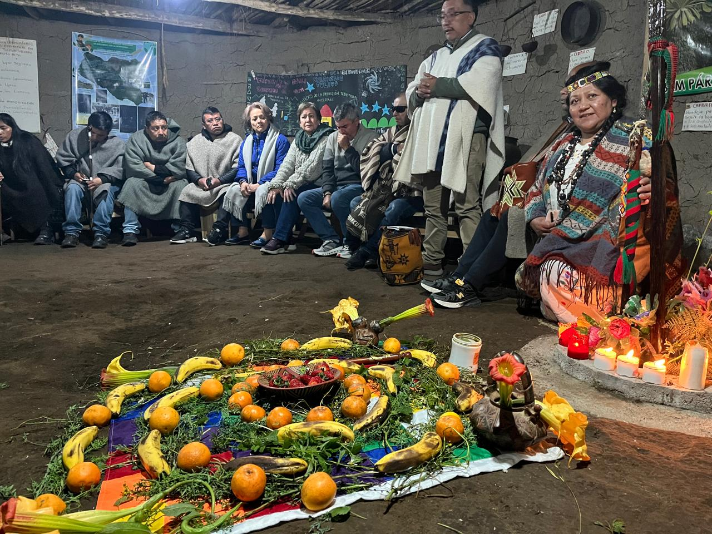

Patrimonio Cultural de Nariño
Nariño es tierra de contrastes, donde se fusionan tradiciones indígenas, mestizas y afrodescendientes. Su capital, San Juan de Pasto, es conocida como la "Ciudad Sorpresa" por su rica herencia cultural que se manifiesta en festividades, artesanías, gastronomía y costumbres ancestrales.
En CODETURIST valoramos y promovemos el respeto por las tradiciones locales, ofreciendo experiencias auténticas que permiten a nuestros visitantes conectarse con la esencia cultural nariñense.
Artesanías y Expresiones Artísticas

Trabajo en Madera
Artesanía tradicional que utiliza maderas locales para crear objetos decorativos y utilitarios con diseños que reflejan la identidad cultural nariñense.

Textilería Indígena
Las comunidades indígenas Pastos y Quillacingas mantienen vivas técnicas ancestrales de tejido en lana y algodón con simbolismos culturales únicos.

Danzas Tradicionales
Las danzas tradicionales de Nariño reflejan la mezcla de culturas indígena, española y africana. Entre las más destacadas están La Guaneña y El Bambuco Fiestero, que expresan alegría, identidad y tradición del pueblo nariñense.
Gastronomía Nariñense
Cuy Asado
Plato tradicional preparado con cuy (conejillo de indias) asado, acompañado de papa y ají.
Empanadas de Añejo
Empanadas de masa de maíz fermentado rellenas de arroz y carne, fritas en aceite bien caliente.
Helado de Paila
Postre tradicional hecho en pailas de bronce, con sabores frutales naturales de la región.
Tamales Nariñenses
Tamales envueltos en hojas de plátano con masa de maíz, carne de cerdo y verduras.

Comunidades Indígenas
Guardianes de Saberes Ancestrales
Nariño alberga diversas comunidades indígenas que preservan conocimientos ancestrales:
- Comunidad Pasto: Habitantes ancestrales de la región, expertos en agricultura andina
- Comunidad Quillacinga: Conocedores de medicina tradicional y rituales sagrados
- Resguardos Indígenas: Territorios donde se practica y preserva la cultura originaria
- Lenguas Nativas: Preservación del quechua y otras lenguas ancestrales
- Cosmovisión Andina: Relación armoniosa con la naturaleza y el territorio
Nuestros tours culturales incluyen visitas respetuosas a estas comunidades, generando intercambios culturales auténticos.

Festividades y Celebraciones
Semana Santa
Procesiones y celebraciones católicas que mezclan la fe con tradiciones locales.

Fiestas en honor a Jesús Nazareno
Realizadas entre enero y febrero, reúnen a miles de devotos en misas, procesiones y eventos culturales para rendir homenaje a la imagen de Jesús Nazareno, símbolo de fe y esperanza.

Fiesta del Señor de Payán
La comunidad expresa su fe a través de misas, danzas y peregrinaciones, mezclando religiosidad y cultura local.
Galería Cultural



Nuestro Compromiso Cultural
Comunidades Apoyadas
Artesanos Beneficiados
Talleres Culturales
Satisfacción Cultural